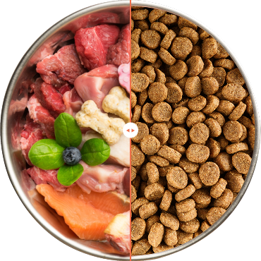

What makes us different
makes them stronger
Real Food
Wholesome recipes for dogs with real meat and veggies.
Premium Ingredient
Elevating pet care with unmatched safety and quality.

Made Fresh
We prioritize maintaining the integrity of whole foods and nutrition.
Vet Developed
We raise the bar for dog nutrition, surpassing industry expectations.
 30-day money back guarantee
30-day money back guarantee